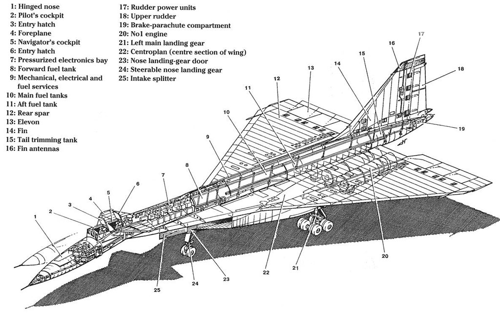
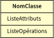
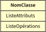
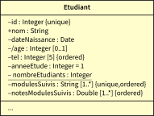
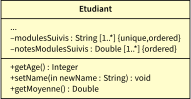
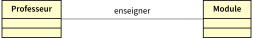
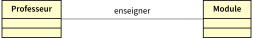

Conception Orientée Objet - COO
Diagramme UML de classes
2A - Bachelor Universitaire de Technologie
IUT d'Orsay - Université Paris-Saclay - 2025/2026
IUT d'Orsay - Université Paris-Saclay - 2025/2026

Qu'est ce qu'un modèle ?
- Un modèle est une représentation/simplification/abstraction de la réalité
- mieux comprendre le sujet (le problème) étudié
Différents modèles d'un avion



Qu'est ce qu'un modèle
en informatique ?
- Un modèle est une représentation d'un système, établie dans un objectif.
-
Un modèle doit permettre de répondre à des questions sur le système.
- mieux comprendre les systèmes complexes.
-
Un modèle a pour objectif de structurer:
- les informations (données)
- et les activités (traitements) d'un système.
-
L'activité de modélisation consiste à décrire de manière non ambiguë
le fonctionnement futur du système afin d'en faciliter la réalisation ;- spécification du système $\to$ description des fonctionnalités du système ;
- conception de l'architecture $\to$ description de la structure générale du système ;
- conception détaillée $\to$ description des algorithmes et des structures de données ;
Les méthodes de conception
- Une méthode de conception est une démarche qui a pour objectif
la formalisation des différentes étapes du développement d'un système. - Une méthode de conception vise à produire un système le plus fidèle
aux besoins du client. - Une méthode de conception fournit une méthodologie.
- Une méthode de conception fournit également des notations standards permettant de concevoir des logiciels de qualité.
Les méthodes de conception
-
Il existe différentes manières pour classer les méthodes de conception.
Nous citons les approches fonctionnelle et orientée objet:-
la conception fonctionnelle (procédurale)
un système est vu comme un ensemble hiérarchique de fonctions. -
la conception orientée objet
un système est un ensemble d'objets en interaction.
-
la conception fonctionnelle (procédurale)
Concepts importants
de l'approche objet
UML est une méthode de conception orientée objet
Pourquoi UML ?
Historique
- 1980 - 1994 $\to$ apparition des langages orientés objets puis de nombreuses méthodes permettant de modéliser la conception.
- 1995 $\to$ proposition d'une méthode commune $\to$ Unified Method (UM).
- 1996 $\to$ la méthode est significativement améliorée et est maintenant appelée Unified Modeling Language (UML).
- 1997 $\to$ UML est adopté par l'Object Management Group (OMG) comme standard (UML 1.0).
Qui est UML ?
- UML (Unified Modeling Language) est un langage (une notation graphique
et une sémantique) de modélisation basé sur la notion d'objets. - UML est considéré comme un outil pour :
- présenter l'analyse d'un système ou les pré-requis le concernant ;
- spécifier et concevoir des systèmes ;
- communiquer sur des processus logiciels ou d'entreprise ;
- documenter un système, un processus ou une organisation existants.
- UML se présente sous forme d'un ensemble de diagrammes qui peuvent être utilisés à différents niveaux d'un cycle de vie d'un logiciel.
Les diagrammes d'UML I
Diagrammes de structure ou diagrammes statiques
- Diagramme de classes (class diagram)
- Diagramme d'objets (object diagram)
- Diagramme de composants (component diagram)
- Diagramme de déploiement (deployment diagram)
- Diagramme des paquets (package diagram)
- Diagramme de structure composite (composite structure diagram)
Diagrammes de comportement
- Diagramme des cas d'utilisation (use-case diagram)
- Diagramme états-transitions (state machine diagram)
- Diagramme d'activité (activity diagram)
Les diagrammes d'UML II
Diagrammes d'interaction ou diagrammes dynamiques
- Diagramme de séquence (sequence diagram)
- Diagramme de communication (collaboration) (communication diagram)
- Diagramme global d'interaction (interaction overview diagram)
- Diagramme de temps (timing diagram)
C'est quoi un diagramme de classes
Diagramme de classes
décrit les entités (classes et interfaces) constituant le système à modéliser
et les relations statiques entre celles-ci.
décrit les entités (classes et interfaces) constituant le système à modéliser
et les relations statiques entre celles-ci.
Définition d'un Classe UML
Classe et Objet
- Une classe regroupe des objets
- Les objets d'une même classe possédent un état et un comportement communs.
- Une classe peut représenter :
- un concept concret (voiture, facture ...)
- un concept abstrait (stratégie ...)
- En UML, une classe représente un type de classificateur.
Exemple
- Une classe : Personne
- Des objets : Jean, Marc, Marie, ...
Définition d'un Classe UML
En UML, une classe est définie par un cadre rectangulaire comportant 3 zones:
- Zone contenant le nom de la classe
- Zone contenant les attributs de la classe
- Zone contenant les opérations de la classe
Représentation d'une classe en UML


Les éléments de la Classe en UML
Les attributs d'une classe UML
- Les caractéristiques (propriétés) sont représentées sous la forme d'attributs.
- Un attribut peut être représenté au moyen de deux notations différentes:
- en ligne pour des données primitives simples (entiers, réels, ...),
- relation pour exprimer des liens avec d'autres classes (voir la section suivante).
Les éléments de la Classe en UML
Les attributs en ligne
-
La forme générale d'un attribut en ligne dans une classe :
visibilité/nom : type multiplicité = valeur-initiale {propriétés} -
Visibilité (par défaut public)
+ (public),- (private),# (protected),~ (package) -
Un attribut dérivé
/
c'est un attribut qui peut être calculé à partir d'autres attributs de la classe -
Multiplicité (par défaut
1 )[val] $\to$ il y aval fois cet attribut[min..max] $\to$ il y a entremin etmax fois cet attribut[min..*] $\to$ il y a au moinsmin fois cet attribut[*] $\to$ il y a un nombre indéterminé d'occurrence de cet attribut
Les éléments de la Classe en UML
Les Propriétés
readOnly $\to$ valeur constantestatic $\to$ attribut partagé entre tous les objets (attribut souligné)unique $\to$ si multiplicité $>$ $1$, valeurs distinctesordered $\to$ si multiplicité $>$ $1$, valeurs ordonnées
Les éléments de la Classe en UML
Exemples

Les éléments de la Classe en UML
Les opérations d'une classe UML
- Une opération permet d'invoquer une fonctionnalité offerte par une classe.
- La forme générale d'une opération dans une classe :
visibilité nom (paramètres) : type-retourné {propriétés} -
Un paramètre d'une opération est de la forme :
direction nom : type multiplicité = valeur-initiale {propriétés} - la direction
in $\to$ paramètre en entrée seule sans modification - la direction
out $\to$ paramètre renvoyé en sortie seule - la direction
inout $\to$ paramètre en entrée avec possibilité de modification
- la direction
La visibilité et les propriétés ont les mêmes définitions et les mêmes
utilisations que dans le cas des attributs.
Les éléments de la Classe en UML
Exemple

Les éléments de la Classe en UML
Les attributs d'une classe UML
- Les caractéristiques (propriétés) sont représentées sous la forme d'attributs.
- Un attribut peut être représenté au moyen de deux notations différentes:
- en ligne pour des données primitives simples (entiers, réels, ...),
relation pour exprimer des liens avec d'autres classes.
Les relations d'association
-
Un système est constitué d'un ensemble d'objets qui interagissent entre eux.
(des classes avec des relations entre elles). -
Une relation d'association entre deux classes peut être interprétée par:
- "... a un ...",
- "... est propriétaire de ...",
- ou "... est composé de ...".
-
Une relation d'association doit être stable.
(elle dure dans le temps et elle est non ponctuelle). - Il est possible de nommer une relation d'association.
Exemple d'une relation d'association

